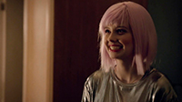
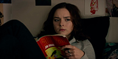
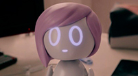
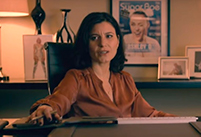

Personajes Principales
Rachel Goggins
Es una chica solitaria que acaba de mudarse a un nuevo barrio con su papá y su hermana Jack.
Rachel pide para sus 15 la muñeca llamada "Ashley Too", que tiene una personalidad inspirada en su idola del pop, Ashley O. Rachel comienza a tratar a Ashley Too como una amiga, que la convence para que baile la canción de Ashley "On a Roll" en un concurso de talentos, pero le va mal.

Jack Goggins
Es la hermana mayor de Rachel.
Tiene un gusto músical rockero.
Jack toca las canciones de rock alternativo favoritas de su madre en la guitarra.
Está en desacuerdo con qué su hermana interactué con la muñeca.

Ashley Ortiz
Es un personaje inspirado como Britney Spears, Christina Aguilera y Miley Cyrus, son mujeres que iniciaron sus carreras como estrellas infantiles y luego se convirtieron en íconos mundiales del pop
En algún momento de su carrera encontro dificultades para seguir su propio instinto y así poder desarrollar su gusto particular en la música.
Ashley Too
Ashley también es una muñeca robótica interactiva
modelado de la cantante pop Ashley O.
La muñeca fue fabricada para venderla como mercancía a los jóvenes fans.
Están equipados con un software limitador que restringe la conciencia a solo el 4% de su capacidad total, lo que
permite que las muñecas solo tengan funciones básicas de inteligencia artificial
de aprendizaje.

Catherine Ortiz
Es la tía y manager de Ashley O.
Catherine es una mujer capaz de todo para alcanzar su propio éxito.
Cuando su sobrina no quiere seguir con el estílo musical la induce a un coma químico con una sobredosis de medicamentos para continuar lucrando con la imagén y música Ashley.
